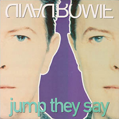
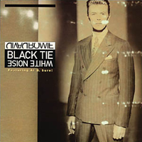
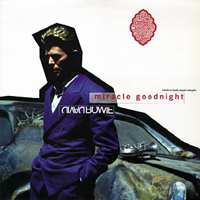
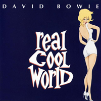

Inspired by the difference between Bowie's eyes (a fight with schoolfriend George Underwood had left his left eye with a permanently dilated pupil), fashion photographer Nick Knight had originally planned to create an album cover in which the right-hand side of Bowie's face was mirrored to form one portrait on the front, and the left-hand side of his face was mirrored to form a second portrait on the back. Eventually, Bowie settled for an extreme close-up shot of his face as it was, reflecting his return to solo work after four years with Tin Machine. The record was inspired by his recent marriage to supermodel Iman - the record is bookended with The Wedding and The Wedding Song - and then tied up and presented as a sophisticated modern urban soul record, one that draws from uptown soul and state-of-the-art dance-club techno with splashy jazzy touches and a nod to modern alt-rock. That's a lot for one record to handle, so it shouldn't come as a surprise that the album doesn't always work, but it's an interesting first step in Bowie's creative revival.
Photographer: Nick Knight
THE WEDDING (Instrumental) YOU'VE BEEN AROUND Where's the pain in the violent night? I'm depressed by the grin I stay over many years I should have thought of that For the love of the money Like a black-hearted violin It's the nature of being It's too many lonely nights I can't tell bad from wrong I can't pass you by Too exchanging You've been around But you've changed me Where the flesh meets the spirit world Where the traffic is thin I slip from a vacant view I should have thought of that And the sound of tomorrow Like a black-hearted vile thing Like the silence of tension It's too many lonely nights I can't tell good from bad I can't pass you by Too exchanging You've been around But you've changed me You've been around Can't pass you by You've been around But you've changed me Ch-ch-ch-ch-ch-ch-change! Too exchanging You've been around But you've changed me You've been around Can't pass you by I FEEL FREE I feel free I feel free I feel free Dear when I dance with you We move like the sea You, you're all I want to know I feel free I feel free I can walk down the street There's no one there The pavement is one huge crowd I can drive down the road My eyes can't see But my mind wants to cry out loud I feel free I can walk down the street There's no one there The pavement is one huge crowd I can drive down the road My eyes can't see But my mind wants to cry out loud I feel free Dance floor is like the sea The ceiling is the sky You're the sun, and as you shine on me I feel free Dance floor is like the sea The ceiling is the sky You're the sun, and as you shine on me I feel free Dance floor is like the sea The ceiling is the sky You're the sun, and as you shine on me I feel free BLACK TIE WHITE NOISE (Yo yo yo yo yo) (Yo yo yo yo yo) (Yo yo yo yo yo) Getting my facts from a Benetton ad I'm looking through African eyes Lit by the glare of an L.A. fire (Black tie, white noise) I've got a face, not just my race, bang bang I've got you babe Putting on the black tie Cranking out the white noise Sun comes up and the man goes down And the woman comes again Just an hour or so to be safe from fear (Black tie, white noise) Then we jump through hoops, we're divisible now Just disappear Putting on the black tie Cranking out the white noise We reach out over race and hold each other's hands Then die in the flames singing "We Shall Overcome" What's going on? There'll be some blood no doubt about it But we'll come through, don't doubt it I look into your eyes and I know you won't kill me I look into your eyes and I know you won't kill me You won't kill me You won't kill me, no But I look into your eyes and I wonder sometimes Putting on the black tie Cranking out the white noise Oh Lord, just let him see me Lord, Lord, just let him hear me Let him call me brother Let him put his arms around me Let him put his hands together Reach over race and hold each other's hands Walk through the night thinking "We Are the World" What's going on? There'll be some blood no doubt about it But we'll come through don't doubt it I look into your eyes and I know you won't kill me And I turn my back and I know you won't kill me You won't kill me You won't kill me, no But I wonder why Yes, I wonder why sometimes Putting on the black tie Cranking out the white noise They'll show us how to break the rules But never how to make the rules Reduce us down to witless punks (Black tie, white noise) Fascist cries both black and white Who's got the blood, who's got the gun? Putting on the black tie Cranking out the white noise (Just a fool!) JUMP THEY SAY When comes the shaking man A nation in his eyes Striped with blood and emblazed tattoo Streaking cathedral spire They say They say They say He has no brain They say He has no mood They say He was born again They say Look at him climb They say jump They say jump They say He has two gods They say He has no fear They say He has no eyes They say He has no mouth They say 'hey that's really something' They feel he should get some time I say he should watch his ass My friend don't listen to the crowd They say jump They say jump Watch out! Watch out! Watch out! They say 'hey that's really something' They feel he should get some time I say he should watch his ass My friend don't listen to the crowd They say jump Got to believe somebody They say jump Jump Got to believe somebody They say jump Jump Got to believe They say jump Got to believe somebody Jump Got to believe Jump Got to believe somebody Jump Got to believe Jump Got to believe somebody Jump They say jump They say jump They say jump They say jump NITE FLIGHTS There's no hold The moving has come through The danger brushing you Turns its face into the heat and runs the tunnels It's so cold The dark dug up by dogs The stitches torn and broke The raw meat fist you choke Has hit the bloodlite Glass traps open and close on Nite flights Broken necks feather weights press the walls Be my love, we will be gods on nite flights With only one promise, only one way to fall Glass traps open and close on Nite flights Broken necks feather weights press the walls Be my love, we will be gods on nite flights With only one promise, only one way to fall On nite flights Only one way to fall PALLAS ATHENA God Is on top of it all That is all That's all we are We are, we are praying We are, we are God Is on top of it all MIRACLE GOODNIGHT Burning up each others love, burning up our lives Tried all kinds of working out, miracle goodnight Future full and empty knocking on my door Ragged-limbed and hungry mama Miracle no more (Skin tell me) turn it around (Head tell me) make it alright (Nobody dancing) Morning star you're beautiful, yellow dime on high Spin you round my little room, miracle goodnight Evening flower all alone, puzzling, capiche? Haven't got a death wish, just want a little more (Skin tell me) turn it around (Head tell me) make it all right (Nobody dancing) miracle goodnight (Breath tell me) turn it around (Heart tell me) make it all right (Nobody dancing) it was only make believe I wish I was a sailor a thousand miles from here I wished I had a future, anywhere I love you in the morning sun, I love you in my dreams I love the sound of making love, the feeling of your skin The corner of your eyes, I long forevermore I never want to say goodnight, miracle goodnight (Skin tell me) turn it around (Head tell me) make it all right (Nobody dancing) miracle goodnight (Breath tell me) turn it around (Heart tell me) make it all right (Nobody dancing) it was only make believe Don't want to know the past, I want to know the real deal I really don't want to know that The less we know, the better we feel Morning star you're beautiful, yellow diamond high Spinning around my little room, miracle (Skin tell me) turn it around (Moon tell me) make it alright (Nobody dancing) it was only make believe (Eyes tell me) turn it around (News tell me) make it alright (Nobody dancing) (Skin tell me) turn it around (Head tell me) make it all right (Nobody dancing) miracle goodnight (Breath tell me) turn it around (Heart tell me) make it all right (Nobody dancing) it was only make believe DON'T LET ME DOWN & DOWN Still I keep my love for you No place to hide no way to fall Nowhere to lie no world so wide I'm sick and tired of telling you Don't let me down and down and down Don't let me down and down and down I know there's something in the wind That crazy balance of my mind What kind of fool are you and I? Scared to death and tell me why I'm sick and tired of telling you Don't let me down and down and down Don't let me down and down and down Still I keep my love for you You made a date with destiny You jog-jog in my memory You haunt in mind not fade away I'm sick and tired of telling you Don't let me down and down and down Don't let me down and down and down Don't let me down and down and down I'm sick and tired of telling you Still I keep my love for you No place to hide no way to fall Nowhere to lie no world so wide I'm sick and tired of telling you Don't let me down and down and down Don't let me down and down and down Still I keep my love for you Don't let me down and down and down I'm sick and tired of telling you Don't let me down Don't let me down Don't let me down No place to hide no way to fall Still I keep my love for you Still I keep my love for you LOOKING FOR LESTER (Instrumental) I KNOW IT'S GONNA HAPPEN SOMEDAY My love wherever you are Whatever you are, don't lose faith I know it's gonna happen someday to you Please wait Please wait Wait, don't lose faith You say that the day never arrives And it's never seemed so far away But I know it's gonna happen someday to you Please wait Please wait Wait, don't lose faith Please wait Please wait Please, don't lose faith Don't lose faith You say that the day never arrives And it seems so far away But I know it's gonna happen someday Someday to you To you Please wait THE WEDDING SONG These are silver wings These are golden eyes These are floating clouds Angel for life Dreaming alone and I feel that someone Listens to me Angel for life These are silver wings These are golden eyes These are floating clouds Angel for life Heaven is smiling down, heaven's girl in a wedding gown I'm gonna be so good, just like a good boy should I'm gonna change my ways Angel for life Of all the saints alive Don't I feel like a saint alive She's not mine for eternity Though I'll never fly so high I'm smiling I believe in magic Angel for life REAL COOL WORLD So far this love is delightful The face of seduction was you But I listened For each and every footstep In this real cool world Questioning saint like and fantastic heroes Feeling like lost little children in fabled lands So I listen For each and every friendship In this real cool world [CHORUS] (Day, day, day, day, day, day, day) Now there is you (Day, day, duh, duh, duh) In my real cool world Starry-eyed life but somehow believing in nothing You whisper sweet nothing but reading between your lines I listen Colour me doubtful In this real cool world [CHORUS x2] You came from nowhere (you came from nowhere) You came from nowhere (you came from nowhere) You held me you shook me (you held me you shook me) Hey (hey) It's a cool world It's a cool world It's a real cool world It's a real cool world It's a real cool world It's a real cool world [CHORUS] You came from nowhere (you came from nowhere) You came from nowhere (you came from nowhere) You held me you shook me (you held me you shook me) Hey (hey) Mhm-mhm (Dai-dai, duh, duh, duh) Real cool world LUCY CAN'T DANCE Lucy I know what you're going to going to do Oh Lucy look what you're doing I'm doing it too Now you're looking for God in exciting new ways I say trust Him at once which is something these days [CHORUS x2] Lucy can't dance to the noise but she Knows what the noise Can do Did the world just explode? Don't recognize anyone But you've still got me under your thumb [CHORUS] Pursuing your frenzy in Ritz or Savoy In this sexual noise, vicious chords Offer joy You live and you die in the blink of an eye Well I can't make you dance Dance to the noise [CHORUS] Dance to the noise Lucy I know what you're going to going to do But you can't buy me off in this serial world Who who who died and made you material girl? [CHORUS] So I'll spin while my lunatic lyric Goes wrong Guess I'll put all my eggs in a postmodern Song [CHORUS] Or this shallow orb mugged by reality Just a few simple words like I love you I need you Live and you die in the blink of an eye Still I can't make you dance Dance to the noise [CHORUS]
SINGLES



